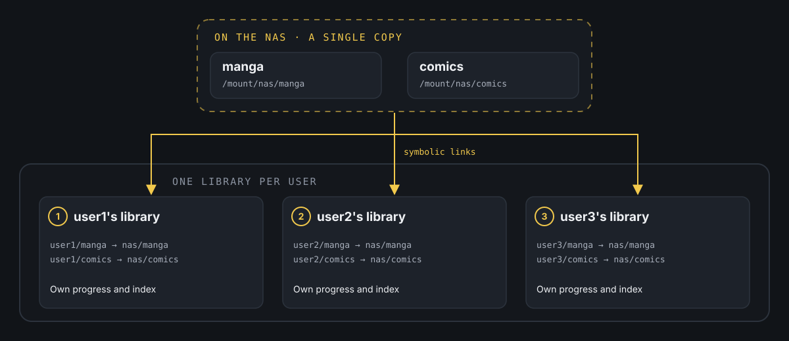
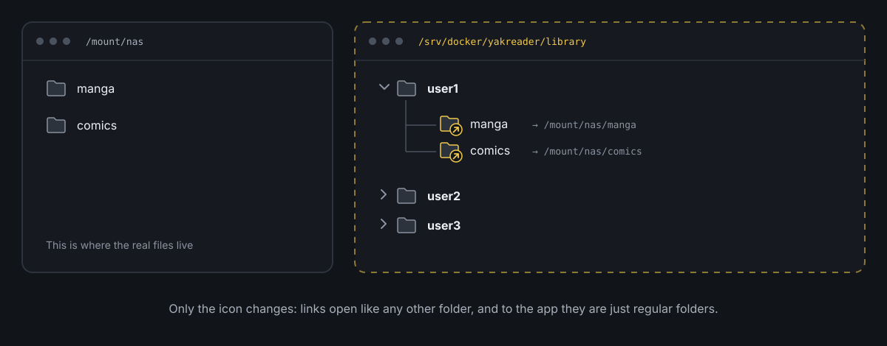

Use symbolic links to avoid duplicates.
The problem with Yakreader
Do you have an app that doesn't handle users, and you want several people to use it? That was my situation with Yakreader, my comic and manga reader.
Yakreader has no users, and in a reader, progress matters: which issue you're on in each series, which pages you've bookmarked and what you still have left to read. If several people share the same library, all of that gets mixed up.
If I wanted separate libraries for several people at home, the obvious option seemed to be tripling the source files, a full copy of the manga and comics for each person. And disk space isn't exactly something I have to spare.
In the end, the solution is nothing exotic and not specific to Yakreader: symbolic links. It works for any app with the same problem, whether it handles reading, downloads, music or anything else.
The dilemma
The quickest option would be to point every library straight at the source folder, so the three Yakreader users read from the same path. The problem is that, for most of these apps, the folder they scan isn't just a list of files. It's also the foundation everything else is built on.
If three users share exactly the same source folder, they also share:
- Reading or playback progress. If the app stores progress by file path instead of by user, marking a chapter as read marks it for everyone.
- Metadata and organization. Renaming, moving or deleting something in one user's folder affects the others, because it's actually the same folder.
- The library scan itself. Some apps build their index or cache from the exact path, so sharing a path also means sharing that index.
The old-school alternative, duplicating the files for each user, solves this by brute force, but it multiplies disk usage with every copy and forces you to keep all the copies in sync whenever new content arrives. For a NAS with several terabytes of manga and comics, it's not worth it.
The middle ground: symbolic links
A symbolic link (symlink) is a special file that holds no data, just a path to another file or folder. When an app opens that link, the operating system transparently redirects it to the real target. To the app, it's indistinguishable from a regular folder with its own files inside.
This fits the problem above perfectly. The idea is to separate two things that until now had to go together:
- Where the content really lives, a single copy on the NAS or whichever disk it's on.
- How each library sees it, a different path per user or per app, pointing to that same copy through a link.
That way, each Yakreader library scans its own folder, with its own index and its own reading progress, but under the hood they're all reading exactly the same files. When a new volume lands in the source folder, it shows up in all three libraries at once without touching anything else. And if a user reorganizes their view (although in this case one link per content type is all it takes), neither the original nor the others are affected.
The same pattern works for any app with the same problem: a download manager feeding several apps, a music library you want organized differently depending on the player, or any case where “one source, many views” is exactly what you need.
How the flow looks

Every link points to the same real content, but each library only scans its own path: progress, cache and index stay separate by design.

This is how anyone would see it in a file explorer. The linked folders only stand out because of their icon, and apps that support symbolic links treat them just like a regular folder.
On Linux or macOS (bash)
We start from two source folders that are already mounted (for example, a NAS network share mounted on the local file system):
/mount/nas/manga/mount/nas/comicsAnd we want three Yakreader users, each with their own library, to see that same content without duplicating it. First, we create the folder structure Yakreader will scan:
mkdir -p /srv/docker/yakreader/library/user1mkdir -p /srv/docker/yakreader/library/user2mkdir -p /srv/docker/yakreader/library/user3Now, one symbolic link per user and per content type:
ln -s /mount/nas/manga /srv/docker/yakreader/library/user1/mangaln -s /mount/nas/comics /srv/docker/yakreader/library/user1/comics ln -s /mount/nas/manga /srv/docker/yakreader/library/user2/mangaln -s /mount/nas/comics /srv/docker/yakreader/library/user2/comics ln -s /mount/nas/manga /srv/docker/yakreader/library/user3/mangaln -s /mount/nas/comics /srv/docker/yakreader/library/user3/comicsln -s source destination creates the link. The order matters: first the real path, then the path of the link you're creating.
To check it worked:
ls -la /srv/docker/yakreader/library/user1You should see something like this, with the arrow showing where each link points:
lrwxrwxrwx 1 manuel manuel 16 Oct 30 11:00 manga -> /mount/nas/mangalrwxrwxrwx 1 manuel manuel 17 Oct 30 11:00 comics -> /mount/nas/comicsFrom here, all you need to do in Yakreader is point each user's library at its folder (/srv/docker/yakreader/library/user1, and so on), and each one will scan the same real content without a single extra copy.
On Windows (PowerShell)
The same approach works just as well on Windows. Here we start, for example, from a mapped network drive (W:), although it could just as easily be a folder on your own disk:
W:\library\mangaW:\library\comicsWe create each user's folder:
New-Item -ItemType Directory -Path "C:\yakreader\library\user1"New-Item -ItemType Directory -Path "C:\yakreader\library\user2"New-Item -ItemType Directory -Path "C:\yakreader\library\user3"And the symbolic links, with New-Item -ItemType SymbolicLink:
New-Item -ItemType SymbolicLink -Path "C:\yakreader\library\user1\manga" -Target "W:\library\manga"New-Item -ItemType SymbolicLink -Path "C:\yakreader\library\user1\comics" -Target "W:\library\comics" New-Item -ItemType SymbolicLink -Path "C:\yakreader\library\user2\manga" -Target "W:\library\manga"New-Item -ItemType SymbolicLink -Path "C:\yakreader\library\user2\comics" -Target "W:\library\comics" New-Item -ItemType SymbolicLink -Path "C:\yakreader\library\user3\manga" -Target "W:\library\manga"New-Item -ItemType SymbolicLink -Path "C:\yakreader\library\user3\comics" -Target "W:\library\comics"One important difference from Linux: to create symlinks on Windows you usually need to run PowerShell as administrator, or turn on Developer Mode (Settings → Privacy & security → For developers), which lets you create them without elevated privileges.
To check the link was created:
Get-Item "C:\yakreader\library\user1\manga" | Select-Object LinkType, TargetIt should return something like this:
LinkType Target-------- ------SymbolicLink {W:\library\manga}Things to keep in mind
Before calling it done, a few caveats worth knowing:
If the source is moved or deleted, the links break. A link only stores a path, not a robust reference to the content. If you rename or move the source folder without updating the symlinks, they stop working and the app will see an empty folder or an error, depending on how it handles it.
The source permissions are what count. A symbolic link has no meaningful permissions of its own. What matters is whether the user the app runs as can read (and, if needed, write to) the real path it points to.
Not every app treats symlinks the same way. The vast majority follow them without any trouble, but some, especially those with strict security checks, may refuse to follow a link that leads outside their working folder. It's worth trying a small test case before setting up the whole structure.
Why it's worth it
What you get from this setup is the separation of two decisions that don't need to be tied together: where the content really lives, and how each app or each person organizes or sees it. A single real copy, as many independent views as you need, without wasting extra space and without having to keep anything in sync by hand.
Yakreader is just the excuse. The same pattern works anywhere an app without user management needs separate progress or settings on top of the same set of files.
If you've made it this far, I hope you found it useful. I realize this solution isn't for everyone, since it depends on the apps you use and how they handle their data.